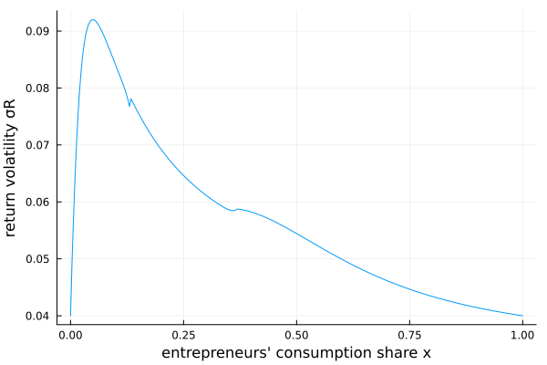

Gomez (2025): wealth inequality and asset prices
An asset-pricing model with a wealth-distribution state. Households and entrepreneurs differ in preferences and in the risk they bear; entrepreneurs hold a leveraged position in the risky asset, so shifts in the wealth distribution move the price of risk and the volatility of returns. The single state $x$ is the entrepreneurs' consumption share, and the unknown is the households' wealth–consumption ratio $p_H$. Demographics (birth, death, and entry of entrepreneurs) keep the distribution stationary.
The model
using EconPDEs, Plots
Base.@kwdef struct GomezModel
# utility households
γ::Float64
ψ::Float64
ρ::Float64
# utility entrepreneurs
ρE::Float64
αE::Float64
ν::Float64
# Demography
η::Float64
δ::Float64
ϕ::Float64
πE::Float64
# Endowment process
g::Float64
σ::Float64
λ::Float64
τ::Float64
end
function GomezModel(;γ = 10.3, ψ = 0.05, ρ = 0.1, ρE = 0.022, αE = 2, ν = 0.1, η = 0.015, δ = 0.025, ϕ = 0.01, πE = 0.09, g = 0.02, σ = 0.04, λ = 2.3, τ = 0.0)
GomezModel(γ, ψ, ρ, ρE, αE, ν, η, δ, ϕ, πE, g, σ, λ, τ)
end
function (m::GomezModel)(state, u)
(; γ, ψ, ρ, ρE, αE, ν, η, δ, ϕ, πE, g, σ, λ, τ) = m
(; x) = state
(; pH, pHx_up, pHx_down, pHxx) = u
p = x / ρE + (1 - x) * pH
xW = x / ρE / p
if xW * αE >= 1
αE = 1 / xW
end
iter = 0
pHx = pHx_up
@label start
px = 1 / ρE - pH + (1 - x) * pHx
σx = x * (αE - 1) * σ / (1 - x * αE * px / p)
σpH = pHx / pH * σx
σp = px / p * σx
σCE = αE * (σ + σp)
σCH = x < 1 ? (σ - x * σCE) / (1 - x) : 0.0
σWH = σCH + σpH
κ = γ * σCH + (γ * ψ - 1) / (ψ - 1) * σpH
ΦE = αE * κ * (σ + σp)
ΦH = κ^2 * (1 + ψ) / (2 * γ) + (1 - ψ * γ) / (γ * (ψ - 1)) * κ * σpH - (1 - γ * ψ) / (2 * γ * (ψ - 1)) * σpH^2
arriving_wealth = (η + δ + ϕ + τ) / (η + δ) * p
wedge = (η + δ) * ((ρE * πE + (1 - πE) / pH) * arriving_wealth - 1)
Ψ = x + (1 - x) * ψ
P = (x * ρE + (1 - x) * ψ * ρ) / Ψ
r = P + 1 / Ψ * (g - x * ΦE - (1 - x) * ΦH - wedge) + τ
μCE = r - τ - ρE + ΦE
μCH = ψ * (r - τ - ρ) + ΦH
μx = x * (μCE - g) + (η + δ) * (ρE * πE * arriving_wealth - x) - σ * σx
if (iter == 0) & (μx <= 0)
iter += 1
pHx = pHx_down
@goto start
end
μpH = pHx / pH * μx + 0.5 * pHxx / pH * σx^2
pxx = - 2 * pHx + (1 - x) * pHxx
μp = px / p * μx + 0.5 * pxx / p * σx^2
μWH = μCH + μpH + σCH * σpH
pHt = - pH * (1 / pH + μWH - r + τ - κ * σWH)
σR = σ + σp
μR = r + κ * σR
σWE = σCE
σErelative = (αE - 1) * (σ + σp)
μErelative = μCE - (g + μp + σ * σp) - σErelative * (σ + σp)
α = x < 1 ? (1 - xW * αE) / (1 - xW) : 0.0
σHrelative = (α - 1) * (σ + σp)
μHrelative = μWH - (g + μp + σ * σp) - σHrelative * (σ + σp)
μxW = xW * (μCE - (g + μp + σ * σp) - σErelative * (σ + σp)) + (η + δ) * (πE * (η + δ + ϕ) / (η + δ) - xW)
σxW = xW * (αE - 1) * (σ + σp)
μxW2 = xW * ((αE - 1) * κ * (σ + σp) - ρE + 1 / p - ϕ - (αE - 1) * (σ + σp)^2) + (η + δ) * (πE * (η + δ + ϕ) / (η + δ) - xW)
α = σWH / (σ + σp)
σp = px / p * σx
μRλ = r + λ * (μR - r)
σRλ = λ * σR
return (; pHt,), (; x, μx, σx, κ, r, σWH, μWH, σp, p, px, σR, μR, μRλ, σRλ, μErelative, σErelative, μHrelative, σHrelative, μCE, μxW, σxW, pH, μCH, wedge, xW, σWE, σCH, αE, pE = 1 / m.ρE, μp = μp)
endSolving it
One state $x \in [0, 1]$, the entrepreneurs' consumption share, on 300 grid points. The single unknown $p_H$ is initialized flat at one.
m = GomezModel()
stategrid = (; x = range(0, 1, 300))
yend = (; pH = ones(length(stategrid[:x])))
@time result = pdesolve(m, stategrid, yend)Residual_norm: 1.1975985551386562e-10
Zero: OrderedDict(:pH => [6.201386995719817, 7.756096042880929, 8.910157574239268, 9.866249972138398, 10.694765863902907, 11.431013074611114, 12.09606320361467, 12.703848453707586, 13.264220283760007, 13.784480927788627 … 31.562222053056573, 31.586818204056566, 31.61133295290547, 31.63576647058751, 31.66011893307167, 31.684390521130712, 31.708581420165235, 31.732691820033164, 31.756721914883034, 31.78067190299153])
The solution
We saved the volatility of the risky return $\sigma_R$. It differs from the fundamental volatility $\sigma$ because prices themselves move with the wealth distribution — endogenous amplification — and the size of that wedge varies with the entrepreneurs' consumption share $x$.
xs = stategrid[:x]
plot(xs, result.optional[:σR]; xlabel = "entrepreneurs' consumption share x", ylabel = "return volatility σR", legend = false)
This page was generated using Literate.jl.